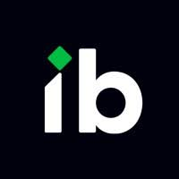
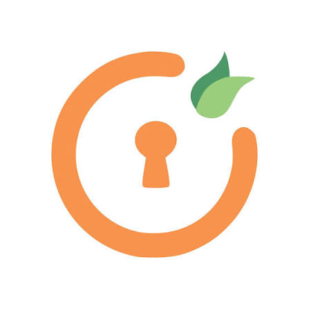

Sift
A staged recommendation service that narrows 14K Yelp candidates to ten in under 100ms.
CS @ University of Washington, currently exploring recommendation systems!
Barça, eating out, fragrances, and big cats.

Infoblox
Custom detectors for AI Governance
UW Computer Systems Lab
Runtime correction for multi-step personal agents

miniOrange
Android malware and anomaly detection
A staged recommendation service that narrows 14K Yelp candidates to ten in under 100ms.
A multimodal DOM + vision agent for studying why multi-step browser agents fail.
A recommendation-driven news site inspired by my childhood habit of reading only the sections I cared about.
Saves and restores Spotify queues—built after losing the perfect queue one too many times.
CuPy/NumPy vs PyTorch on a VGG6 CNN for astrophysical transient detection.
Bulk contact management, scheduling, and announcements used by major Model UN conferences in the Pacific Northwest.
A random-forest spectral classifier designed for accuracy and interpretability.